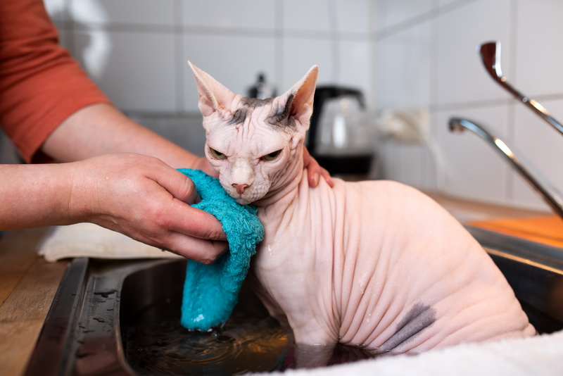
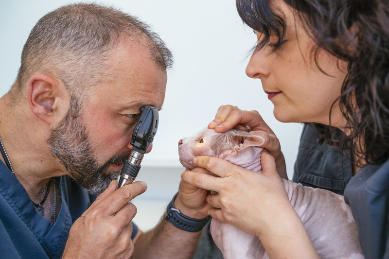
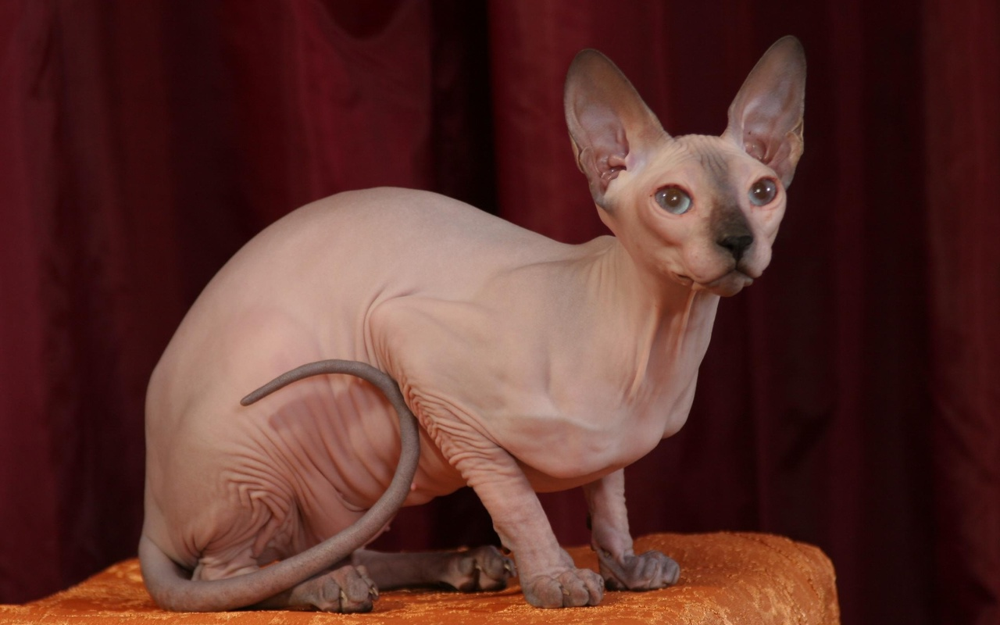

Здоровье Сфинксов
Гигиена
Особенному животному требуется и особенный уход. Дело в том, что сфинксы страдают повышенной потливостью. Ежедневно нужно протирать их тело влажной салфеткой, аккуратно разглаживая каждую складочку. Протирания необходимы во избежание запаха пота и удаления с кожи неприятного липкого налета.
Раз в неделю нужно выделить время, чтобы почистить уши. Глаза протирают ватным диском, увлажненным кипяченой водой или ромашковым отваром для профилактики глазных инфекций. Для каждого уха следует использовать отдельную ватную палочку, и для каждого глаза отдельный ватный диск.
Раз в месяц коту чистят зубы специальной пастой и, если необходимо, подстригают когти. Также раз в месяц купают, используя специальные для данной породы шампуни. В крайнем случае можно воспользоваться детским шампунем.
Для водных процедур существуют определенные правила:
1. Набрать теплую воду (36-38 градусов).
2. Медленно опустить животное в воду, аккуратно придерживая и стараясь не напугать.
3. Создать уютную атмосферу, чтобы кот не боялся купания в дальнейшем (разговаривать с ним, напустить в ванночку пену или предложить какое-то лакомство, когда кот находится уже в воде).
4. Намылить тельце и смыть теплой водой, не допуская попадания пены и воды на мордочку и в уши.
5. Заранее приготовить мягкое полотенце, аккуратно обсушить кота, согреть и беречь от сквозняков.
Здоровье и продолжительность жизни сфинксов
Как правило, у взрослых сфинксов хорошее здоровье. Однако следует знать о распространенных заболеваниях, встречающиеся у кошек данной породы. Некоторые из них можно распознать при покупке котенка в питомнике. Носители генетических патологий считаются бракованными и не допускаются к разведению.
Микрофтальм. Врожденное заболевание, связанное с неправильным развитием глаза. Проявляется как уменьшение глазного яблока. Может быть односторонним и двусторонним. Приводит к постепенному снижению остроты зрения и даже к слепоте. Микрофтальм часто сопровождается осложнениями (кератиты, опухоли, катаракта). Улучшить состояние можно путем пластической хирургии, но полностью вылечить заболевание невозможно.
Искривление хвостового отдела. Встречается довольно часто у сфинксов, но патологию можно распознать с самого рождения. Особи с искривлением хвоста в разведении не участвуют. Потомство от взрослых животных с этим заболеванием, как правило, нежизнеспособно.
Врождённый заворот век. Патология, при которой часть века и ресницы как бы завернуты внутрь и касаются роговицы глаза. Для исправления требуется хирургическое вмешательство. Заворот век часто сопровождается конъюнктивитами и кератитами из-за постоянного раздражения глазного яблока.
Укорочение нижней челюсти. Неправильный прикус, сформированный из-за нарушений в процессе окостенения челюсти. Этот врожденный дефект встречается у всех кошек. Из группы пород сфинксов чаще наблюдается у донских сфинксов. При неправильно сформированной челюсти резцы не совмещаются, а нижние клыки упираются в верхнюю челюсть и создают дискомфорт. Патология не мешает кошке питаться, но может стать причиной воспаления и кровотечения десен.
Угревая болезнь. Наблюдается у кошек с наследственной предрасположенностью. Чаще встречается у полностью лысых кошек голубого и красного окраса. Угревая сыпь (акне) редко покрывает все тело, чаще поражает отдельные зоны (живот, шея и морда, спина вдоль позвоночника и хвост). Лечится специальными препаратами (среди них Моноциклин, Зинерит, Доксициклин) по назначению ветеринарного врача.
Гиперплазия соска. Генетическое заболевание. Также может развиться в результате приема гормональных препаратов. Распознается после первого года жизни. Проявляется в покраснении, уплотнении и затем ороговении сосков. Кошка с таким заболеванием не может не только выкормить, но и выносить здоровое потомство. Требуется операция по удалению сосков и стерилизация животного
Сезонный дерматит. Периодически повторяющееся заболевание. Например, у кошек может проявляться до или после течки. В результате расчесывания зудящих участков дерматит может сопровождаться бактериальными инфекциями. В таком случае ветеринаром назначается лечение (одноразовая инъекция Дексафорта или спрей Террамицин на пораженные участки).
Васкулит. Заболевание связано с поражением сосудов. Может быть вызвано инфекциями и медикаментозными препаратами (например, реакция на антибиотики). Также причиной заболевания может стать стрессовая ситуация (например, в результате вязки, участия в выставке или в результате транспортировки животного). Существует статистики предрасположенности к заболеванию кошек кремового и розового окраса, а также котов расцветки черный арлекин.
В первую очередь следует позаботиться об укреплении иммунной системы и исключить стрессовые ситуации. Для лечения используют наружно мазь Пантенол, масло расторопши пятнистой и препараты: Липостабил, Иммунофор, Гепар Сульфур, Кетозал. Препараты назначает ветеринар.
Врождённое недоразвитие тимуса. Болезнь имеет также название синдром засыпания котят. Термин напрямую связан с проблемой выживания в одном помете голых котят по сравнению с другими котятами (флок, браш, велюр). Активный и здоровый на вид котенок может погибнуть через несколько дней после рождения. На скорую смерть могут указывать слабый сосательный рефлекс, посинение мордочки, сухость кожи в результате обезвоживания. Смерть происходит не в результате недосмотра, а по причине патологии – недоразвитости тимуса (участка мозга) и других жизненно важных систем.
Гиперплазия десны. Заболевание генетически обусловлено и может проявиться в результате низкого иммунитета. Носит хронический характер. Возникает в период прорезания зубов, сопровождается воспалением слизистой десен и кровотечением. Чаще наблюдается у особей черепахового, голубого и кремового окрасов.
Большинство заболеваний сфинксов – врожденные. Выбирать котенка нужно придирчиво и покупать, убедившись в отсутствии врожденных пороков и заболеваний. Животные с признаками этих и других заболеваний должны наблюдаться у ветеринара. Самолечение опасно и может заставить страдать больное животное еще больше.
Своевременные прививки, хороший уход, правильное кормление и систематическое посещение ветеринарного врача избавят вас от проблем и сохранят здоровье вашему питомцу.